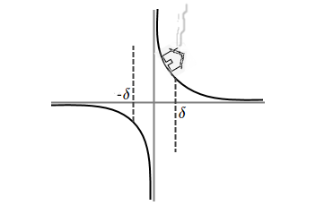

`u_(epsi)(x_o)` это множество чисел отстоящих от `x_o` меньше чем на `epsi`
`u_(epsi)(x_o) = { x : | x - x_o | < epsi }`, при `0 < epsi`
`lim_(x->x_o)f(x)`
это число `alpha`, если для любой кучи соседних с `alpha` выходов `u_(color(red)(epsi))(alpha)` найдётся куча соседних с `x_o` входов `u_(color(red)(delta))(x_o)`
`(AA u_epsi(alpha): EE u_delta(x_o): x in u_delta(x_o) => f(x) in u_epsi(alpha)) <=> (alpha = lim_(x->x_o) f(x))`
При этом, `alpha` и `x_o` могут быть равны и `+oo`, и `-oo`, и даже `oo`
`(AA epsi: EE delta: |x-x_o| < delta = |f(x)| > epsi)<=>(lim_(x->x_o)f(x) = oo)`
Говоришь, в бесконечность идёт горка (или впадина), когда к её центру приблежаюсь
Понимаю, что для любой высоты (или глубины), я найду место своему домику
^_^
На твою эпсилон вокруг альфы, у меня найдётся дельта вокруг икс нулевого
И все мои иксы из округа дельта в твой округ эпсилон через функцию эфффф проскочууут
Компрендо?
1) `AA epsi: EE delta: |x - x_o| < delta => |f(x) - alpha| < epsi`
Мексиканцы из одного города, снимают двушку `lim_(x->x_o)f(x)=alpha`
2) `AA epsi: EE delta: delta < x => |f(x) - alpha| < epsi`
Горные мексиканцы снимают двушку `lim_(x->+oo)f(x)=alpha`
3) `AA epsi: EE delta: x < delta => |f(x) - alpha| < epsi`
Степные мексиканцы снимают двушку `lim_(x->-oo)f(x)=alpha`
4) `AA epsi: EE delta: delta < |x| => |f(x) - alpha| < epsi`
Все мексиканцы, не считая жителей Мехико, снимают двушку `lim_(x->-oo)f(x)=alpha`
5) `AA epsi: EE delta: |x-x_o| < delta => epsi < f(x)`
Мексиканцы из одного города, поселились в башнях `lim_(x->x_o)f(x)=+oo`
6) `AA epsi: EE delta: delta < x => epsi < f(x)`
Дальше сами. У вас получится) `lim_(x->+oo)f(x)=+oo`
7) `AA epsi: EE delta: x < delta => epsi < f(x)`
... `lim_(x->-oo)f(x)=+oo`
8) `AA epsi: EE delta: delta < |x| => epsi < f(x)`
... `lim_(x->oo)f(x)=+oo`
9) `AA epsi: EE delta: |x-x_o| < delta => f(x) < epsi`
... `lim_(x->x_o)f(x)=-oo`
И так ещё 7 определений. Думаю понятно из каких кусков они состоят и то, что `f` тут это зависимость высоты от высоты.
Прошу прощения у всех мексиканцев, которых обидела эта шутка. Просто, я дурачёк насмотревшийся "Южного парка".
`x_o` из `A` у которой любая `u_epsi(x_o)` содержит точки из `A`, и из не `A`.
это объединение всех граничных точек
`del A`
это множество с его оболочкой
`overline A = A uu del A`
равно своему замыканию
`A = overline A`
к пр., `[a,b] = overline ("["a, b"]")`
`x_o` из `A` у которой любая `u_epsi(x_o)` пересекается с `A`
`{:[lim_(x->x_o)f(x)=a], [lim_(x->x_o)f(x)=b]} => a = b`
`(AA epsi > 0: |alpha-omega| < epsi) => alpha = omega`
`|alpha-omega| = |alpha-f(x)+f(x)-omega|`
`|alpha-f(x)+f(x)-omega| <= |alpha - f(x)| + |f(x) - omega|`
`|x-x_o| < delta => {[|alpha - f(x)| < epsi/2], [|omega - f(x)| < epsi/2]:}`
`|alpha - f(x)|+|f(x) - omega| < epsi/2 + epsi/2`
`|alpha - omega| <= |alpha - f(x)|+|f(x) - omega| < epsi`
Доказали
`{:[u(x) < v(x) < w(x)], [lim_(x->x_o)u(x) = a], [lim_(x->x_o)w(x) = a]} =>
(lim_(x->x_o)v(x) = a)`